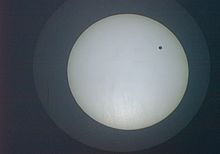

Венера
 Венера е втората по ред планета от Слънчевата система и носи името на богинята Венера
от римската митология. Тя е земеподобна планета, много близка по големина и общи качества
до Земята; понякога е наричана „Планетата-сестра на Земята“. От всички планети в Слънчевата
система Венера има най-малък орбитален ексцентрицитет, равен на 0,7% (нейната орбита е почти
идеално кръгла). Тя прави една обиколка около Слънцето за 224,7 земни дни. Понеже Венера е
по-близко до Слънцето спрямо Земята, тя винаги се наблюдава близко до него.На Земята тя може
да се наблюдава само непосредствено преди изгрев и след залез. Обикновено тогава тя е най-яркото
небесно тяло след Луната и Слънцето и затова понякога е смятана за звезда и е наричана Зорница,
Денница (Деница) и Вечерница.
Венера е била известна на древните вавилонци (около 1600 г. пр.н.е.) и вероятно е била позната
и в праисторически времена поради високата си яркост. Неин символ е стилизираният образ на
огледалото на богинята Венера: окръжност с малък кръст отдолу.
Венера има атмосфера, която съдържа главно въглероден диоксид и малко количество азот.
Налягането на повърхността на планетата е огромно — 90 пъти по-високо от това на земното морско
равнище или еквивалентно на налягането в земните океани на около 1 km дълбочина.
Венера е втората по ред планета от Слънчевата система и носи името на богинята Венера
от римската митология. Тя е земеподобна планета, много близка по големина и общи качества
до Земята; понякога е наричана „Планетата-сестра на Земята“. От всички планети в Слънчевата
система Венера има най-малък орбитален ексцентрицитет, равен на 0,7% (нейната орбита е почти
идеално кръгла). Тя прави една обиколка около Слънцето за 224,7 земни дни. Понеже Венера е
по-близко до Слънцето спрямо Земята, тя винаги се наблюдава близко до него.На Земята тя може
да се наблюдава само непосредствено преди изгрев и след залез. Обикновено тогава тя е най-яркото
небесно тяло след Луната и Слънцето и затова понякога е смятана за звезда и е наричана Зорница,
Денница (Деница) и Вечерница.
Венера е била известна на древните вавилонци (около 1600 г. пр.н.е.) и вероятно е била позната
и в праисторически времена поради високата си яркост. Неин символ е стилизираният образ на
огледалото на богинята Венера: окръжност с малък кръст отдолу.
Венера има атмосфера, която съдържа главно въглероден диоксид и малко количество азот.
Налягането на повърхността на планетата е огромно — 90 пъти по-високо от това на земното морско
равнище или еквивалентно на налягането в земните океани на около 1 km дълбочина.
Физически характеристики
Атмосфера
Венера има атмосфера, която съдържа главно въглероден диоксид и малко количество азот. Налягането на повърхността на планетата е огромно — 90 пъти по-високо от това на земното морско равнище или еквивалентно на налягането в земните океани на около 1 km дълбочина. Атмосферата, богата на CO2, поражда силен парников ефект и повишава температурата на повърхността с повече от 460 °C над стойността, която тя би имала, ако Венера нямаше атмосфера. В ниските екваториални райони температурата на повърхността достига до 500 °C. Поради този факт повърхността на Венера, взета като цяло, е по-гореща от тази на Меркурий, независимо от факта, че Венера е почти два пъти по-далече от Слънцето и съответно получава само 25% от слънчевата енергия, която получава Меркурий (2613,9 W/m² в горните части на атмосферата и само 1071,1 W/m² на повърхността).
Поради конвекцията и топлинната инертност на нейната гъста атмосфера, на Венера температурата не се изменя значително между дневната и нощната страна, въпреки изключително бавното въртене на планетата (по-малко от един оборот за една венерина година; на екватора скоростта на въртене е едва 6,5 km/h). Ветровете в горните слоеве на атмосферата обикалят планетата само за 4 дни, като подпомагат разпределението на слънчевата топлина. Слънчевата енергия е много по-ниска на повърхността на планетата спрямо горните слоеве на атмосферата и поради нейната гъста облачна покривка, която отразява по-голямата част от енергията обратно в космоса. Болометричното албедо на Венера е приблизително 60%, а видимото ѝ албедо е дори още по-високо. Без наличието на парников ефект температурата на Венера би била много близка до температурата на повърхността на Земята. Честа грешка е да се мисли, че гъстата атмосфера сама по себе си задържа топлината на повърхността на планетата; всъщност единствено въглеродния диоксид е парников газ, а гъстата атмосфера като цяло отразява голяма част от слънчевите лъчи.
В горните слоеве на атмосферата преобладават силни ветрове със скорост 350 km/h, докато на повърхността ветровете са много слаби – само няколко километра в час. Поради високата плътност на атмосферата обаче дори и слаби ветрове могат да упражнят значително налягане върху препятствията, на които се натъкнат. Високите облаци са съставени предимно от серен диоксид и капки от сярна киселина, които правят повърхността на планетата невидима в оптичния диапазон. Температурата на горните слоеве на атмосферата е около −45 °C. Средната температура на Венера, по данни на НАСА, е 464 °C. За минималната температура на повърхността се предполага, че е поне 400 °C. През 2007 г. космическия апарат Венера Експрес открива, че на южния полюс на планетата има огромна двойна вихрушка.
Повърхност
Венера има бавно ретроградно въртене – по посока на часовниковата стрелка (тук под ретроградно се разбира движение в посока, противоположна на движението на нещо друго, а в случая на повечето планети от Слънчевата система). Това означава, че тя се върти от изток на запад, вместо от запад на изток, както повечето други основни планети (Плутон и Уран също имат ретроградно въртене, въпреки че оста на въртене на Уран има наклон 97,68 градуса и почти лежи на неговата орбитална равнина). Не е известно със сигурност защо Венера се върти по посока на часовниковата стрелка, въпреки че се предполага, че в миналото се е сблъскала с много голям астероид. Една интересна подробност за въртенето на Венера е, че то изглежда е в синхрон с положението на Земята; Венера е винаги обърната с една и съща страна към Земята, когато двете планети се намират възможно най-близко по техните орбити (5,001 Венерини дни между две последователни сближавания). Този ефект може да се обясни с приливния ефект на Земята върху Венера, но може и да е просто съвпадение.
Венера има два основни „континента“, които са по-високи от заобикалящите ги обширни равнини. Името на северния континент е Ishtar Terra („Земя на Ищар“) и на него се намира една от най-високите планински вериги — Maxwell Montes („Максуелски планини“), която е приблизително 2 km по-висока от Еверест и носи името на Джеймс Максуел. Тя обгражда платото Lakshmi Planum. Ishtar Terra е голяма приблизително колкото Австралия. В южното полукълбо е по-голямата Aphrodite Terra („Земя на Афродита“), която е голяма приблизително колкото Южна Америка. Между тези континенти има множество широки падини, като Atalanta Planitia, Guinevere Planitia и Lavinia Planitia. С единственото изключение на Maxwell Montes, всички обекти и забележителности на повърхността на Венера носят имена на жени от историята или митологията.
Гъстата атмосфера на Венера успешно „омекотява“ сблъсъците на метеорити (особено на сравнително малките) с повърхността; метеоритни кратери с диаметър по-малък от 3,2 km не могат да се формират. Почти 90% от повърхността на Венера се състои от сравнително скорошно (в геологичен план) изстинала базалтова лава и много малко метеоритни кратери. Предполага се, че причината за това са интензивни вулканични изригвания, които са променили почти изцяло повърхността на планетата. Вътрешността на планетата е най-вероятно много близка до тази на Земята: желязно ядро с радиус около 3000 km, обградено от полуразтопена скалиста мантия, която заема по-голямата част от обема на Венера. Резултати от измервания на гравитацията, извършени от апарата Магелан, посетил планетата през 1994 г., показват, че дебелината на кората на Венера е по-голяма от очакваната от специалистите. Според една теория Венера няма активна тектоника, подобна на земната; вместо това повърхността ѝ бива периодично заливана от лава вследствие на масивни вулканични изригвания. За най-старите участъци от повърхността е установено, че са само на около 800 милиона години (по-малко от 1/5 от възрастта на планетата); останалата повърхност е значително по-млада (но в по-голямата си част е на поне 100 милиона години). Скорошни изследвания също сочат, че в изолирани участъци на Венера все още има вулканична активност.
За вътрешното магнитно поле на Венера е установено, че е слабо в сравнение с другите планети от Слънчевата система. Този факт може да се обясни с бавното въртене на планетата, което прави невъзможна циркулацията на течно желязо в ядрото ѝ. В резултат на това слънчевият вятър въздейства директно върху горните слоеве на атмосферата. Учените считат, че преди време на Венера е имало толкова вода, колкото и на Земята, но слънчевият вятър бавно е разрушил водните молекули до съставните им елементи (водород и кислород). Гравитацията на Венера е недостатъчна да задържи лекия изотоп на водорода протий (водород-1) и той впоследствие се е разпръснал в междупланетното пространство. За сметка на това по-тежкият деутерий (водород-2) бива задържан по-успешно от венерината гравитация. Доказателство за това е повишената му концентрация в горните слоеве на атмосферата. Молекулярният кислород от друга страна е реагирал с елементи на повърхността на планетата. Поради липсата на вода скалите на Венера са много по-твърди от земните, което прави възможни по-стръмни скали и по-високи планини.
За Венера се е считало, че има естествен спътник — Нейт — мит, породен от наблюденията на Джовани Доменико Касини през 1672 г. Спорадичните съобщения за наблюдаван естествен спътник на Венера продължават чак до 1892 г. В днешно време е потвърдено, че Венера няма естествени спътници и че всички предишни съобщения са били породени от бледи звезди, случайно попаднали на малко ъглово разстояние до планетата.
Наблюдения и изследвания на Венера
Исторически изследвания
Венера е най-яркото небесно светило на сутрешния и вечерния небосвод (изключвайки Слънцето и Луната) и е била известна още в праисторическите времена. Един от най-старите запазени астрономически документи от Вавилонската библиотека на Ашурбанипал от 1600 пр.н.е. представлява 21-годишни записки на небесните явления на Венера (която ранните вавилонци са наричали Ниндарана). В Акад тя е била олицетворение на майката-богиня Ищар (чието име заимства континентът Ishtar Terra). В китайската митология тя е била наричана Дзин син (金星) или планетата на елемента метáл. В ранния период на Древна Гърция сутрешните и вечерните явления на Венера са считани за две различни светила. Древните гърци са наричали сутрешното явление на Венера Фосфор (Φώσφορος: „Носител(ка) на светлината“; понякога – Ἑωσφόρος: „Носител(ка) на зората“), а вечерното — Хеспер (Ἓσπερος: „Носител(ка) на вечерта“). Предполага се, че Питагор първи е установил, че става въпрос за един и същи обект. За живелия през 4 век пр.н.е. Хераклид Понтийски пък се знае, че е осъзнал факта, че Венера и Меркурий обикалят около Слънцето, а не около Земята.
Поради това че нейната орбита е разположена по-близко до Слънцето от тази на Земята, Венера преминава през различни фази по начин, подобен на Луната. Първият човек, наблюдавал фазите на Венера, е Галилео Галилей през декември 1610 г. с помощта на неговия саморъчно направен телескоп. Това наблюдение потвърждава хелиоцентричната система за организацията на Слънчевата система, предложена от Николай Коперник. Галилей също така забелязва промените във видимия диаметър на Венера в зависимост от нейните фази — когато е видима голяма част от диска ѝ, то той е малък, а когато Венера изглежда като полумесец, то размерите на полумесеца са големи. С други думи, когато Венера изглежда като полумесец, тя е по-близко до Земята, отколкото когато дискът ѝ е пълен — извод, който силно поддържа хелиоцентричната система на Коперник. Венера (както и Меркурий) обаче не е видима, когато нейният диск е съвсем пълен (когато тя е възможно най-отдалечена от Земята), понеже при това положение нейната светлина се изгубва в мощния блясък на Слънцето.
Венера е най-ярка, когато приблизително 25% от нейният диск е видим, или 37 дни преди и след най-близкия ѝ подход спрямо Земята. Най-голямата ѝ елонгация се наблюдава 70 дни преди и след най-близкия ѝ подход — половината от диска на Венера е видим. В периода между максимална елонгация и максимална яркост Венера може да се наблюдава с невъоръжено око през деня. В редки случаи Венера може да се види непосредствено преди изгрев и непосредствено след залез в рамките на един ден. Това е възможно, когато планетата е максимално отдалечена от еклиптиката и същевременно е възможно най-близко до Земята. При това положение в едно от земните полукълба (или Северното или Южното) тя ще може се наблюдава два пъти в рамките на един ден. За последен път в Северното полукълбо това се е случвало на 29 март 2009 г., а за последен път в Южното полукълбо — на 19 август 1999 г. Събитието се повтаря с период от 8 години.
 Пасажите на Венера настъпват, когато планетата пресече линията, свързваща Слънцето и Земята, и по този начин закрие част от видимия слънчев диск. Те са редки астрономически явления. За първи път такъв пасаж е наблюдаван на 4 декември 1639 г. от Джеръмая Хорокс и Уилям Крабтрий. През 1761 г. Михаил Ломоносов наблюдава пасаж на Венера, от който заключава, че планетата има атмосфера. През 19 век наблюдения на паралакса при пасаж на Венера, направени по едно и също време на различни точки от земната повърхност, позволяват за първи път да се определи с точност разстоянието от Земята до Слънцето (астрономическата единица), а по този начин и размерите на цялата Слънчева система. В исторически план последният период на пасажи на Венера е бил между 1874 и 1882 г. Текущият период ще продължи от 2004 до 2012 г. Възможно е да се наблюдават само през началото на юни или началото на декември, понеже единствено тогава Венера пресича еклиптиката (равнината, в която лежи земната орбита).
През 19 век много наблюдатели погрешно са считали, че Венера има период на въртене от приблизително 24 часа. Италианският астроном Джовани Шапарели първи предсказва, че въртенето на Венера е значително по-бавно, допускайки, че планетата е обърната винаги с една и съща страна към Слънцето вследствие на слънчевите приливни сили (същото твърдение той прави и за Меркурий). Всъщност и двете твърдения са грешни — Венера се върти бавно около оста си в посока, обратна на часовниковата стрелка, а Меркурий се завърта точно три пъти около оста си за всеки две свои обиколки около Слънцето (3:2 орбитален резонанс със Слънцето).
Бавното въртене на Венера и фактът, че тя изглежда е в резонанс със Земята (Венера винаги е обърната с една и съща страна към Земята, когато двете планети са максимално сближени и следователно Венера е най-удобна за наблюдения), са подвели астрономите да приемат теорията на Джовани Шапарели. Истинската скорост на въртене на Венера около оста ѝ е измерена за първи път през 1961 г. чрез радарни вълни, отразени от повърхността на Венера обратно към Земята. За целта са използвани 26-метровия радиотелескоп в Голдстоун Калифорния, радиообсерваторията Jodrell Bank в Обединеното кралство и съветската обсерватория в Евпатория. Точността на измерванията впоследствие е подобрявана с всяко изминало сближаване. Фактът, че Венера се върти ретроградно, не е бил известен до 1964 г.
Преди радионаблюденията през 60-те години на 20 век е била разпространена представата, че средата на Венера е много подобна на земната. Поради факта, че Венера е по-близо до Слънцето, се е считало, че повърхността ѝ е покрита с джунгли и гъсти дъждовни облаци. Спекулирало се е даже дотам, че тя има океани от суров петрол. През 1956 г. измервания в микровълновия обхват показват наличие на източник на висока температура — над 600 K. Едновременно с това измервания в милиметровия обхват свидетелстват за много по-ниски температури. Правото да обяснят тези резултати си оспорват две теории: според едната източникът на висока температура е йоносферата на Венера, а според другата – повърхността ѝ.
Наблюдения от космически апарати
През втората половина на 20 век са проведени многобройни безпилотни мисии до Венера. Няколко от тях са осъществили меки кацания на повърхността на планетата. Досега обаче не е осъществена мисия за връщане на материал от повърхността на Венера към Земята.
Как да стигнем до Венера
Орбитата на Венера е по-близко до Слънцето от тази на Земята средно с 28%. Тази разлика се равнява на 41 милиона километра, които трябва да се изминат по посока към Слънцето. Потенциалната енергия, освободена при този преход, ще се преобразува в кинетична енергия, която ще доведе от своя страна до значително увеличение на скоростта. За близък и безопасен подход към Венера е необходимо да се ограничи тази допълнителна скорост. Ситуацията е аналогична на излизане от път на ръба на пропаст, пропадане надолу в пропастта и безопасно включване в движението на друг път, който се намира на дъното на пропастта (виж орбитална механика и преходна орбита на Хохман).
Първи посещения от космически апарати
На 12 февруари 1961 г. Венера 1, изстрелян от СССР и първи от програмата Венера, става първият апарат, достигнал до друга планета. Въпреки проблеми, свързани с прегрял ориентационен сензор, Венера 1 се счита за първия междупланетен апарат. Оборудването му включва: слънчеви панели, параболична антена за телеметрия, стабилизация по трите оси и двигател за корекция на курса. Венера 1 е и първият апарат, изстрелян от паркова орбита. Първата истински успешна мисия до Венера е осъществена от американския апарат Маринър 2 (базиран на лунния апарат Рейнджър), който посещава планетата през 1962 г. По време на мисията е установено, че Венера няма магнитно поле и е измерена нейната микровълнова емисия. Зонд 1 е изстреляна на 2 април 1964 г. от СССР, но мисията завършва преждевременно поради повреда на апарата
Първи кацания на повърхността
На 1 март 1966 г. съветската сонда Венера 3 се разбива на повърхността на Венера и така става първият обект, достигнал до повърхността на друга планета. Венера 2 (изстреляна по-рано) прегрява и приключва мисията си преждевременно. Спускателният модул на Венера 4 навлиза в атмосферата на Венера на 18 октомври 1967 г. и предава първите директни измервания на температурата, налягането, плътността и химичния състав на атмосферата на друга планета. Данните за въглероден диоксид показват, че той съставлява 95% от атмосферата. От друга страна сензорите за налягането, вземайки предвид и данните на Маринър 5, показват повърхностно налягане, много по-голямо от очакваното — от порядъка на 75 – 100 атмосфери.
Резултатите впоследствие са потвърдени и доуточнени от Венера 5 и Венера 6 на 16 и 17 май 1969 г. До този момент нито един апарат не е осъществил успешно меко кацане на повърхността — батериите на Венера 4 се изтощават по време на бавното спускане през гъстата атмосфера, докато Венера 5 и Венера 6 са смачкани от високото налягане на височина 18 km от повърхността на планетата. Първото успешно кацане е осъществено от Венера 7 на 15 декември 1970 г. Измерени са повърхностни температури от 457 до 474 °C. Венера 8 каца успешно на 22 юли 1972 г. Освен вертикални профили на температурата и налягането, бордният фотометър на апарата показва, че долната граница на облаците, изцяло покриващи Венера, е на височина 35 km; на по-малки височини атмосферата е прозрачна. Химичният състав на кората също е анализиран посредством гама спектрометър.
Първи апарати в орбита около Венера
Съветският апарат Венера 9 влиза в орбита около планетата на 22 октомври 1975 г. Изпратена е информация за облаците, йоносферата и магнитосферата на Венера, както и радарни измервания на повърхността. Тежащият 660 kg спускателен модул на Венера 9 каца успешно и предава първите снимки от повърхността и резултати от анализ на кората с гама спектрометър и инструмент за измерване на плътността. По време на спускането са съставени вертикални профили на налягането, температурата, осветеността и измервания на гъстотата на облачната покривка посредством нефелометър. Установено е, че облаците формират три различни слоя. На 25 октомври същата година Венера 10 прави подобни измервания.